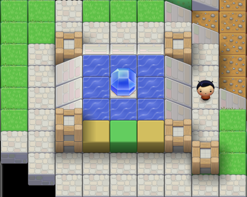

“Tile Game” was a game I wrote in the spring of 2010 as my final project for CI272 Visual Basic at MVCC. It was written in, of course, Visual Basic. However, I thought the game design itself was interesting enough to warrant porting it to JavaScript so it would have a wider audience.
The concept is that you move within a 3-dimensional block world, can pick up objects and push boxes, and can't jump or climb. Your goal is to reach the exit; your obstacle is flows of water shifted by your actions. The game is turn-based: you move once, and the world reacts. You cannot outrun the water.
Despite a resemblance in the types of blocks present, I completed this game before I ever heard of Minecraft.
I have tested it to work on all browsers conveniently to hand. In particular, it is functional, but tediously slow, on the Android 2.2 browser, probably due to the scaled tile images. Firefox is slow when scrolling. The best performance I found is on Safari and Chrome; I particularly recommend playing in Chrome's full-screen mode.
Browse the source code here or browse/download/clone at GitHub.
The tile images used in this project are the "PlanetCute" art by Daniel Cook (Lostgarden.com) and are distributed under the Creative Commons Attribution 3.0 License. All other elements are Copyright 2010-2011 Kevin Reid, and may be distributed and modified under the MIT License, the text of which follows.
Permission is hereby granted, free of charge, to any person obtaining a copy of this software and associated documentation files (the "Software"), to deal in the Software without restriction, including without limitation the rights to use, copy, modify, merge, publish, distribute, sublicense, and/or sell copies of the Software, and to permit persons to whom the Software is furnished to do so, subject to the following conditions:
The above copyright notice and this permission notice shall be included in all copies or substantial portions of the Software.
THE SOFTWARE IS PROVIDED "AS IS", WITHOUT WARRANTY OF ANY KIND, EXPRESS OR IMPLIED, INCLUDING BUT NOT LIMITED TO THE WARRANTIES OF MERCHANTABILITY, FITNESS FOR A PARTICULAR PURPOSE AND NONINFRINGEMENT. IN NO EVENT SHALL THE AUTHORS OR COPYRIGHT HOLDERS BE LIABLE FOR ANY CLAIM, DAMAGES OR OTHER LIABILITY, WHETHER IN AN ACTION OF CONTRACT, TORT OR OTHERWISE, ARISING FROM, OUT OF OR IN CONNECTION WITH THE SOFTWARE OR THE USE OR OTHER DEALINGS IN THE SOFTWARE.
As of 2011-02-06, the port from the original VB code is now complete, other than some missing animation (specifically, there is no animation on win, and all but the last block of falling happens instantaneously). The approach for choosing the scale of the tiles could also use some improvement.